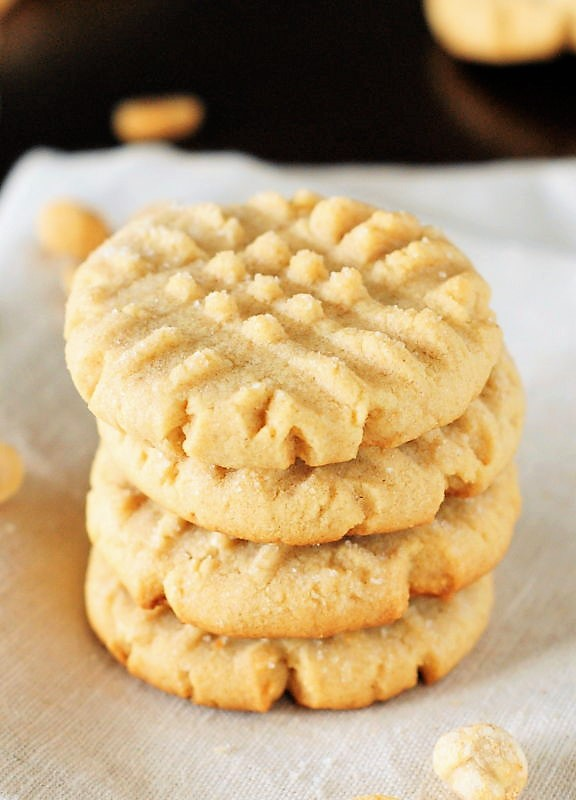

Soft Peanut Butter Cookies

Descriptions
This is my mother-in-law's recipe. She was always baking and this is one of my favorite recipes she had.
Ingredients
- 1 cup creamy peanut butter
- 1 cup packed brown sugar
- 1 cup white sugar
- 1 cup butter or 1 cup margarine, softened
- 2 eggs
- 1 teaspoon baking soda
- 1 teaspoon baking powder
- 1 teaspoon vanilla extract
- 2 1/2 cups flour
Steps
- Cream butter, peanut butter and both sugars together.
- Add eggs, one at a time, beating well.
- Add baking soda, powder and vanilla.
- Stir in flour.
- Roll into balls, roll in sugar. Flatten cookies, using a fork, in a criss-cross pattern.
- Bake on ungreased cookie sheet at 350 degrees for 6-7 minutes or adjust to suit your oven and size of cookies!
Back Home